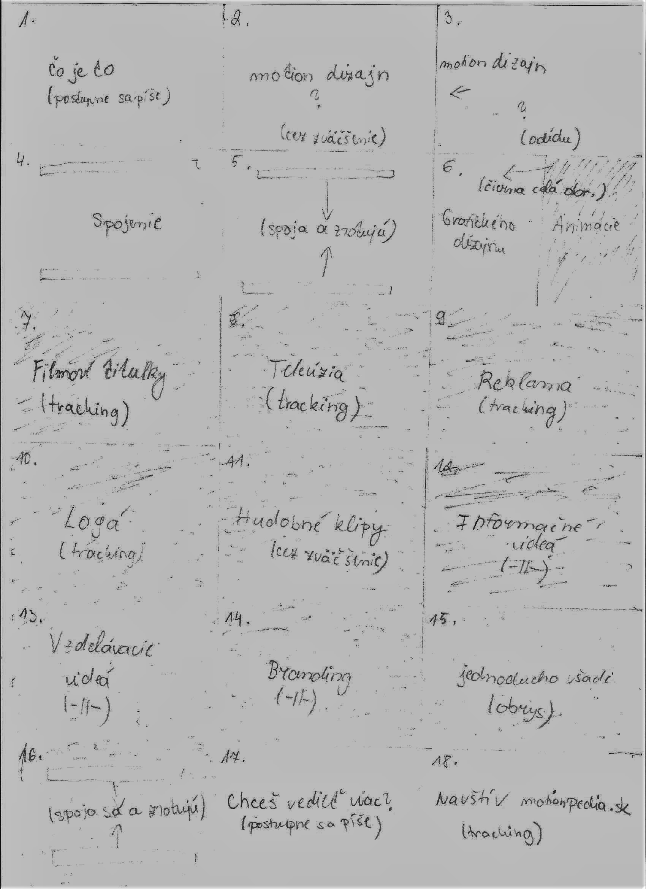

Tvorba motion dizajn animácie
1. Príprava
Príprava motion dizajn animácie zahŕňa nasledujúce kroky, ktoré sú spoločné pre každý druh animácie alebo filmu:
- Námet
- Scenár
- Storyboard
Námet
Námet pomáha ujasniť, aký bude obsah vytváranej animácie, aká technika bude pri jej tvorbe použitá a čo všetko na ňu budeme potrebovať. Čo sa týka animácie vytváranej v tomto návode, námetom sú odpovede na tri otázky: Čo je to motion dizajn? Kde sa využíva? Chceš vedieť viac?
Scenár
Druhým krokom je predspracovanie námetu do podoby scenára. Aj keď motion dizajn animácia nemá dej, je tu vhodné vypracovať aspoň scenár v bodoch, aby sme v procese tvorby vedeli, ako sa bude daná animácia vyvíjať. Scenár pre vytváranú animáciu bol nasledovný:
- Čo je to motion dizajn?
- Spojenie animácie a grafického dizajnu.
- Kde sa využíva?
- Filmové titulky, televízia, reklama, branding,...
- Chceš vedieť viac?
- Navštív motionpedia.sk.
Storyboard
Posledným krokom je vizualizácia scenára do podoby storyboardu. Storyboard predstavuje kresby, ktoré snímok po snímke zobrazujú koncept vizuálnej podoby scenára. Predstavujú grafický návrh finálnej animácie
